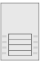
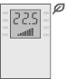
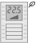
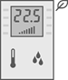
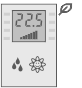

QMX3.P02、P34、P37、P44、P74 设备属性
列出的属性显示在Hardware and network editor > Inspector window > Properties当在 KNX PL-Link 的设备在Device view选项卡。
QMX3.P02 | QMX3.P34 | QMX3.P37 | QMX3.P44 | QMX3.P74 |
 |  |  |  |  |
General and Catalog information
常规和目录信息组提供有关设备的信息。
财产 | 描述 | 默认值 |
|---|---|---|
模式 | 模式显示设备的网络模式。只读。 | KNX PL-Link |
姓名 | 名称是用于输入设备名称的文本字段。该名称用于在设备视图中标识该设备。 | 取决于其他设置。 |
评论 | 注释是一个自由文本字段，用于输入有关设备的任何有用信息。 | - |
功耗 | 功耗显示设备消耗的电量。只读。 单位：[毫安] 该值用于计算 KNX 轨道的剩余电量。 另请参阅功耗和电源KNX rail of PXC3orKNX rail of DXR2. | 取决于设备类型。 |
简称 | 简短名称显示设备的简短描述。只读。 | 取决于设备类型。 |
订单号 | 订单号显示设备类型。只读。 | 取决于设备类型。 |
版本 | 版本显示设备的内部版本。只读。 | - |
描述 | 描述显示设备的简短描述。只读。 | 取决于设备类型。 |
Device information
设备信息组提供有关设备和设置的信息。
财产 | 描述 | 默认值 |
|---|---|---|
设备地址 (KNX) | 设备地址 (KNX) 显示具有 KNX PL-Link 的设备的固定标准地址。只读。 | 255 |
网络地址 (KNX) | 网络地址 (KNX) 显示根据设备地址 (KNX) 分配的网络地址。只读。 | 0.2.255 |
使用的序列号 | 使用的序列号定义了设备识别的方法。
|
|
序列号 | 序列号是一个文本字段，用于输入用于设备识别的序列号。 仅当启用使用的序列号时，序列号才启用且有意义。 | 000000000000 |
定制视图 | 自定义视图定义使用项目树中的哪个 QMX3 模板。
|
|
 ：在文本字段序列号中输入的序列号用于设备识别。
：在文本字段序列号中输入的序列号用于设备识别。 ：设备识别必须在Web界面中完成。设备必须处于 Web 界面编程模式才能执行设备识别。
：设备识别必须在Web界面中完成。设备必须处于 Web 界面编程模式才能执行设备识别。 可用模板列表
可用模板列表Alarming
财产 | 描述 | 默认值 |
|---|---|---|
令人震惊 |
|
|
Functions
通道概述中的功能表提供了设备通道的概述。根据设备的不同，表中的值是只读的或可以编辑的。可用类型取决于设备和应用程序功能。
财产 | 描述 |
|---|---|
姓名 | 频道名称。只读。 |
类型 | 函数的名称。 |
区 | 设备地理地址的一部分。 范围：1...126 |
房间 | 设备地理地址的一部分。 范围：1...63 |
分区 | 设备地理地址的一部分。 范围：1...15 Note |
激活 | 激活定义通道是否被激活。
|
下表简要描述了这些功能。功能的分类取决于设备。
类型 | 描述 | 使用通道数 |
|---|---|---|
GPDO | 通用数字输出。只读。 | 1 |
HVAC | 供暖、通风和空调。只读。 | 1 |
LDSB | 基本的调光传感器。只读。 | 1 |
SSSB | 遮阳帘传感器基本。只读。 | 1 |
一些功能是可以配置的。下面按字母顺序描述这些函数的属性。
Outside sensor zone
外部传感器区域由 QMX3.P34、QMX3.P37、QMX3.P44 和 QMX3.P74 支持。
财产 | 描述 | 默认值 |
|---|---|---|
Outside sensor zone | 外部传感器区域定义了哪些外部传感器向房间操作员单元提供数据。 外部传感器被分配到外部传感器区域而不是地理地址（建筑区域、房间、子区域）。 范围： | 取决于其他设置。 |
 1...31
1...31